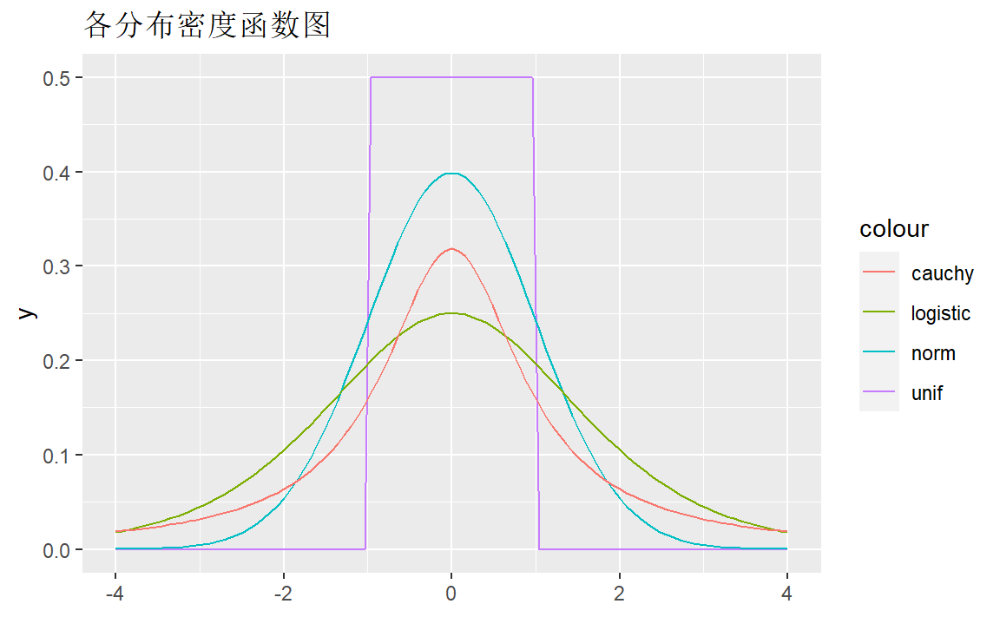
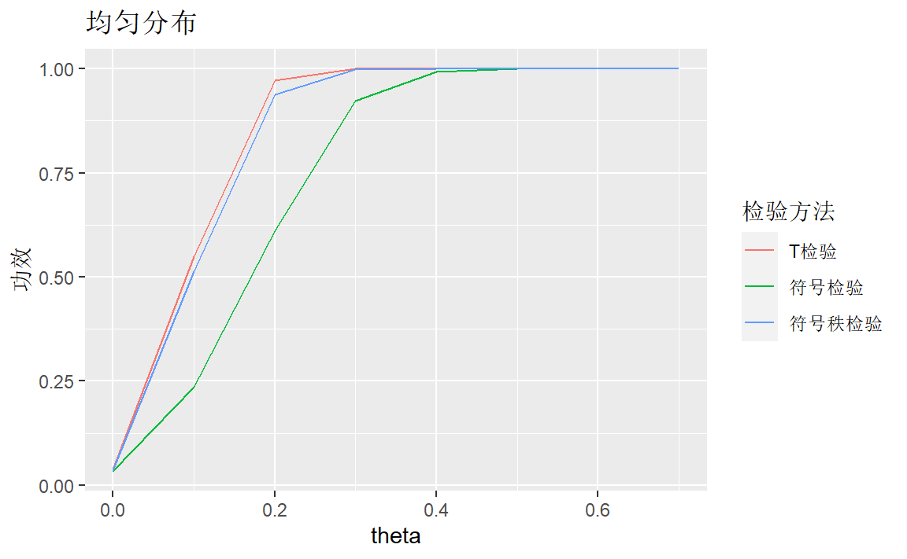
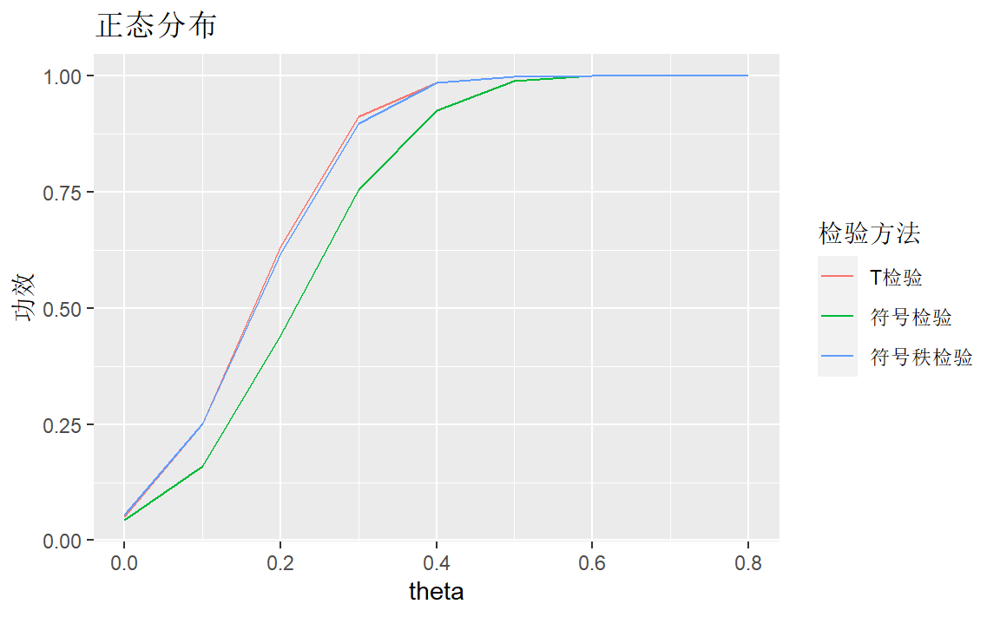
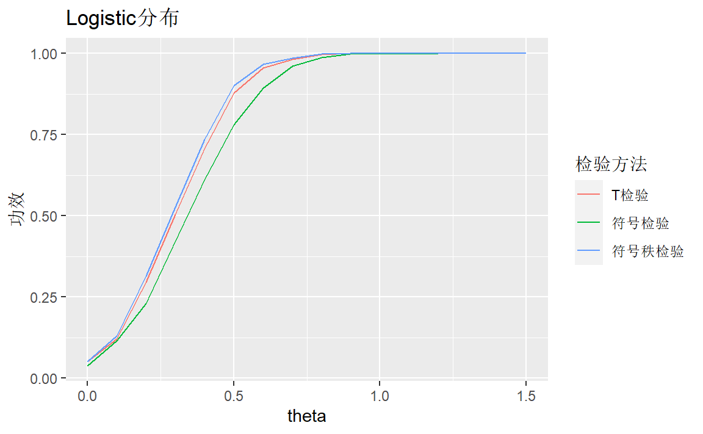
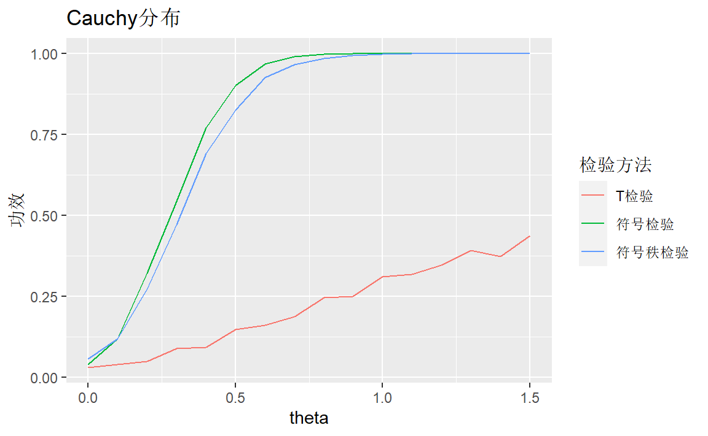

4 检验的功效与渐进相对效率
先载入一些包：
library(tidyverse)4.1 检验的功效
利用统计模拟的方法，比较单样本位置检验中不同检验方法的功效。
4.1.1 假设检验问题
随机变量\(X_1,\cdots,X_n\)是来自连续分布总体\(F(x-\theta)\)的样本，函数\(F(t)\)关于0点对称。检验假设： \[ H_0:\theta=0\qquad v.s. \qquad H_1:\theta>0 \]
4.1.2 检验方法
- T检验。检验统计量为： \[ T=\frac{\bar X}{S/\sqrt{n}} \]
其中，\(\bar X\)为样本均值，\(S\)为样本标准差。拒绝域为\(T\ge t_{n-1}(1-\alpha)\)
符号检验。检验统计量为： \[ S^+ = \sum_{i=1}^n\psi(X_i) \] 拒绝域为\(S^+\ge b(1-\alpha,n)\).
符号秩检验。检验统计量为： \[ W^+ = \sum_{i=1}^n\psi(X_i)R_i^+ \] 拒绝域为\(W^+\ge w(1-\alpha,n)\)。
4.1.3 实验分布
选择典型的常用对称分布，分别为[-1,1]上均匀分布、正态分布、Logistics分布、Cauchy分布。
ggplot()+
geom_function(aes(colour = "unif"),fun = dunif,args = list(min=-1,max=1))+
geom_function(aes(colour = "norm"),fun = dnorm)+
geom_function(aes(colour = "logistic"),fun = dlogis)+
geom_function(aes(colour = "cauchy"),fun = dcauchy)+
lims(x=c(-4,4))+
ggtitle("各分布密度函数图")
4.1.4 统计模拟
一些预定参数：
对固定分布\((\theta,F)\)产生样本值1000次，每次100个样本；
显著性水平\(\alpha\)取0.05。
# 定义带参数的均匀分布作为新函数
runif_new <- function(n){
runif(n,min = -1,max = 1)
}
# 检验功效函数
testpower <- function(theta,funcs,n=100,times=1000,alpha=0.05){
library(tidyverse)
s <- funcs(n*times)+theta # 产生样本
s <- matrix(s,nrow = times) # 每行为一组样本
# T检验功效
p <- apply(s,1,t.test,alternative = "greater") %>%
map(~.$p.value) %>%
unlist()
pt <- mean(p<alpha)
# 符号检验
# 求大于0个数
postn <- function(x){
sum(x>0)
}
# 求等于0个数
zeron <- function(x){
sum(x==0)
}
s1 <- apply(s,1,postn)
s2 <- apply(s,1,zeron)
p <- map2(s1,n-s2,binom.test,p = 0.5,alternative = "greater") %>%
map(~.$p.value) %>%
unlist()
ps <- mean(p<alpha)
# 符号秩检验
p <- apply(s,1,wilcox.test,alternative = "greater",mu=0) %>%
map(~.$p.value) %>%
unlist()
pw <- mean(p<alpha)
l <- list(pt=pt,ps=ps,pw=pw)
l
}对均匀分布：
theta <- seq(0,0.7,by = 0.1)
map(theta,testpower,funcs=runif_new)->ln
df <- data.frame(matrix(unlist(ln), ncol=3,byrow = TRUE))
df %>%
rename(pt=X1,ps=X2,pw=X3) %>%
ggplot(aes(x=theta))+
geom_line(aes(y=pt,color="T检验"))+
geom_line(aes(y=ps,color="符号检验"))+
geom_line(aes(y=pw,color="符号秩检验"))+
labs(title = "均匀分布",y="功效",color="检验方法") T检验方法比符号秩检验方法稍好，符号检验方法较差。
对正态分布：
theta <- seq(0,0.8,by = 0.1)
map(theta,testpower,funcs=rnorm)->ln
df <- data.frame(matrix(unlist(ln), ncol=3,byrow = TRUE))
df %>%
rename(pt=X1,ps=X2,pw=X3) %>%
ggplot(aes(x=theta))+
geom_line(aes(y=pt,color="T检验"))+
geom_line(aes(y=ps,color="符号检验"))+
geom_line(aes(y=pw,color="符号秩检验"))+
labs(title = "正态分布",y="功效",color="检验方法")
T检验方法比符号秩检验方法稍好，符号检验方法较差。
对Logistics分布：
theta <- seq(0,1.5,by = 0.1)
map(theta,testpower,funcs=rlogis)->ln
df <- data.frame(matrix(unlist(ln), ncol=3,byrow = TRUE))
df %>%
rename(pt=X1,ps=X2,pw=X3) %>%
ggplot(aes(x=theta))+
geom_line(aes(y=pt,color="T检验"))+
geom_line(aes(y=ps,color="符号检验"))+
geom_line(aes(y=pw,color="符号秩检验"))+
labs(title = "Logistic分布",y="功效",color="检验方法")
三种检验方法比较接近，符号秩检验方法稍好。
对Cauchy分布：
theta <- seq(0,1.5,by = 0.1)
map(theta,testpower,funcs=rcauchy)->ln
df <- data.frame(matrix(unlist(ln), ncol=3,byrow = TRUE))
df %>%
rename(pt=X1,ps=X2,pw=X3) %>%
ggplot(aes(x=theta))+
geom_line(aes(y=pt,color="T检验"))+
geom_line(aes(y=ps,color="符号检验"))+
geom_line(aes(y=pw,color="符号秩检验"))+
labs(title = "Cauchy分布",y="功效",color="检验方法")
符号检验方法较好，T检验方法很差。
所以，如果我们对\(H_1\)下的分布有一定的先验知识：峰度等，可以选择适宜的检验方法，也可以通过估计来粗略得到分布的峰度、偏度等等。